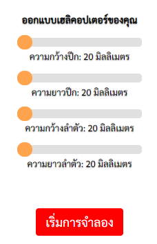
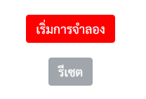
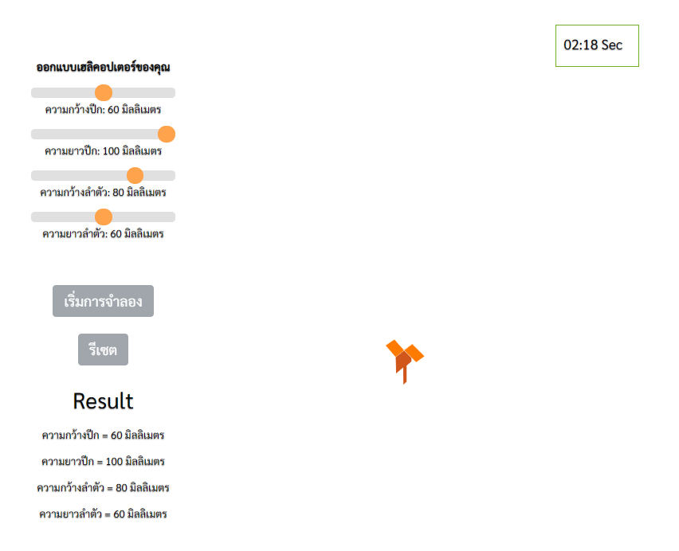

วิธีการใช้งาน
เพื่อการใช้งานได้อย่างเต็มประสิทธิภาพ โปรดทำตามขั้นตอนแนะนำเบื้องต้นดังนี้
แถบเลื่อนสไลด์ ใช้ในการกำหนดค่าต่าง ๆ ขององค์ประกอบของเฮลิคอปเตอร์กระดาษ โดยผู้ใช้สามารถใช้เมาส์คลิกเลื่อนเพื่อเลือกค่าที่ต้องการได้ โดยเลือกได้ 5 ค่า โดยเริ่มจาก 20, 40, 60, 80 และ 100 มิลลิเมตร

เมื่อผู้ใช้งานได้เลือกค่าตามที่ต้องการแล้ว และพร้อมสำหรับการจำลอง ให้ผู้ใช้กดปุ่ม "เริ่มการจำลอง" เพื่อสั่งให้โปรแกรมทำการจำลองการตกของเฮลิคอปเตอร์กระดาษ

เมื่อโปรแกรมเริ่มการทำงานแล้วจะแสดงผลแอนิเมชันจำลองการตกของเฮลิคอปเตอร์กระดาษ

หากผู้ใช้ต้องการจะทำการจำลองใหม่ ให้กดปุ่ม "รีเซ็ต" เพื่อคืนค่าเดิม และเพื่อเป็นการสั่งให้โปรแกรมเตรียมพร้อมสำหรับการจำลองในค่าอื่น ๆ ได้
หมายเหตุ: ผลการจำลองอ้างอิงจากการทดลองจริง